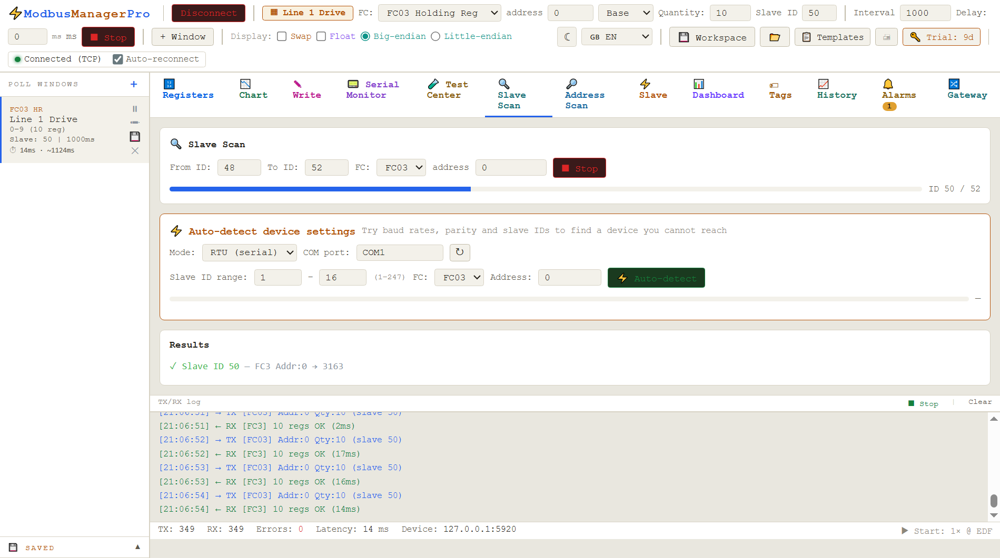
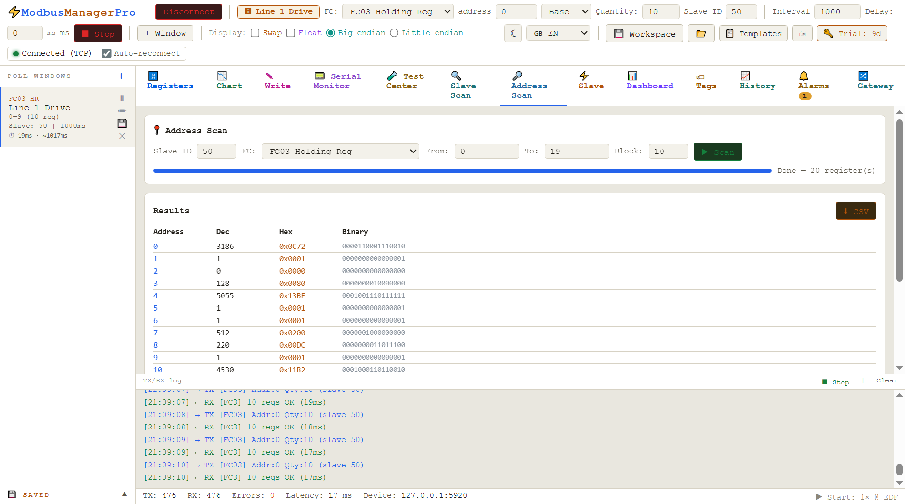

A device on the bus and no documentation, or documentation that doesn't match? ModbusManager finds it. Scan slave IDs, sweep address ranges, and auto-detect baud rate and parity when the settings are unknown — for RTU and TCP. Then read the registers in the same tool, decoded in every word order at once.
Unlike BACnet, Modbus has no built-in discovery. The master is supposed to already know every device, its address, and its serial settings. When it doesn't — a spare panel, an undocumented meter, a drive with the wrong DIP switches — the only way forward is methodical scanning: try the addresses, try the settings, see what answers. ModbusManager does all three, in one place.
// three kinds of scan
Three ways to find a device
🔍 Slave Scan — which addresses answer
You know the serial settings but not which slave IDs are live. Slave Scan walks the ID range (1–247) and reports every device that responds — even ones that only return an exception, which still proves they're there.

Scanning a slave ID range — one device found and read
🔎 Address Scan — map an unknown register space
The device answers, but you don't have its register map. Address Scan sweeps a range of registers and shows which hold data, so you can rebuild the map from the device itself when the manufacturer's PDF is lost or wrong.

A completed address sweep — every register decoded three ways
The hardest case: you don't know the baud rate, parity or slave ID. Auto-detect tries the combinations (9600/19200/38400…, none/even/odd, 1/2 stop) and reports what the device replies on — in standard 9600 8N1 form. It even guesses the word order from the first register pair. On TCP it scans Unit IDs behind a gateway.
A scan does not simply return "found" or "not found". Each address produces one of three results, and telling them apart is most of the diagnostic value — especially the middle one, which people routinely throw away.
✅
Valid response
The device answered with data. You have the right slave ID, the right serial settings, and a register that exists. This is the only outcome that confirms all three at once.
⚠
Exception response
The device is there. It received a well-formed request, understood it, and refused — usually because that register or function code does not exist on it. The slave ID and serial settings are correct. Only the address you asked for was wrong.
⏳
Timeout
Nothing came back. This is the ambiguous one: wrong slave ID, wrong baud or parity, wrong wiring, or simply nothing at that address. A timeout proves nothing except that this particular attempt failed.
That middle column is the reason ModbusManager reports exception responses as finds rather than hiding them. An exception from slave 17 is a firm, verified answer: something is alive at 17, it speaks your baud rate, and your wiring is good. All that remains is to find a register it will give you — which is what an address scan is for. A scanner that only reports successful reads will tell you slave 17 is empty, and you will spend the afternoon re-checking the cable.
// exception code 02 vs 03
Two exception codes come up constantly on a scan. 02, illegal data address, means the register number is not implemented — keep scanning, you are close. 03, illegal data value, usually means the register exists but you asked for a quantity it will not serve in one go, which is common on devices that cap a read at eight or sixteen registers. Different problems, different fix, and a scanner that reports only "error" loses the distinction.
// the arithmetic before you start
How long will this take?
Worth a moment's thought, because the naive settings can turn a two-minute job into an overnight one. A scan is dominated by timeouts, not by successful reads — a device that answers does so in milliseconds, while an empty address costs you the full timeout every time.
Scan
Attempts
At 1000 ms timeout
At 300 ms timeout
Slave IDs 1–247, one setting
247
~4 min
~75 s
Slave IDs 1–32, one setting
32
~32 s
~10 s
Auto-detect: 6 bauds × 3 parities, IDs 1–32
576
~10 min
~3 min
Address sweep, 1000 registers, 1 at a time
1000
~17 min
~5 min
Address sweep, 1000 registers, blocks of 100
10
~10 s
~3 s
Three things follow from that table. Narrow the ID range first — most installations use single-digit or DIP-switch-set addresses, so 1–32 finds the device in a tenth of the time and you can always widen later. Drop the timeout to 300–500 ms for the discovery pass; a device on a healthy RS-485 segment replies far faster than that, and you can re-check any near-misses at a longer timeout afterwards. And sweep addresses in blocks, not one register at a time — the last two rows differ by a factor of a hundred for the same coverage.
The one case for a long timeout is a device behind a TCP-to-RTU gateway, where the gateway serialises requests onto a slow serial segment and a reply can genuinely take a second or more. If a TCP scan comes back completely empty, raising the timeout before anything else is the cheapest test.
// honest comparison
ModbusManager Pro vs CAS Modbus Scanner
CAS Modbus Scanner is a good, genuinely free discovery tool — if all you need is to find devices and read registers for a few minutes, it does that well. The difference shows up once discovery is done and you need to keep working with what you found.
ModbusManager Pro
CAS Scanner
Scan slave IDs / address ranges
✓
✓
Auto-detect baud & parity
✓
✓
RTU, ASCII & TCP
✓
✓
Word order both ways (ABCD & CDAB, big & little endian)
✓
little-endian only
Save / export the register map you found
✓ CSV, XLSX, PDF
— debug only
Snapshot & diff (what changed)
✓
—
Slave simulation (act as a device)
✓
—
Dashboard HMI, trends, alarms
✓
—
Combine several devices into one map (gateway)
✓
—
Price
$119 one-time (Pro)
free
The comparison points about CAS (debug-only, little-endian word order) come from its own users and documentation. It's a fine tool for a quick look; ModbusManager is built for the work that comes after.
// the thing that saves a commissioning day
"Why is my float garbage?"
A 32-bit float spans two registers, and manufacturers don't agree on the order — ABCD, CDAB, BADC, DCBA. Guess wrong and the number is nonsense. In ModbusManager you right-click any 32-bit value and see all four interpretations at once, as both float and integer. The one that looks like a real reading tells you the order. CAS Scanner shows little-endian only, so a big-endian device reads wrong with no obvious fix.
// the scan came back empty
Nothing answered. Now what?
A completely silent scan is almost never a broken device. It is usually one of a short list of physical and configuration problems, and they are worth working through in this order — cheapest and most likely first.
A and B are swapped
Far and away the most common cause, because the labelling is genuinely inconsistent between manufacturers — A/B, D+/D−, and the occasional vendor who has them the other way round. Swapping the two wires is free, takes ten seconds, and costs nothing if you are wrong. Do it before you touch any settings.
The USB adapter is not releasing the line
RS-485 is half duplex: the master has to stop driving the bus before the slave can answer. Cheap adapters that switch direction too slowly talk fine and hear nothing, which looks exactly like a dead device. If a known-good device is silent on one adapter, try another one before suspecting the device.
Slave ID 0, or an ID outside the scan
Address 0 is the broadcast address, and devices do not reply to it — a device left at 0 is unreachable by a normal scan. Equally, a scan of 1–32 will never find a device someone set to 100. If a narrow scan is empty, widen to the full 1–247 once before concluding anything.
Termination and stub length
A long run with no termination resistors, or a device hung off a long spur, produces reflections that corrupt frames. The symptom is intermittent rather than total silence: some replies, some CRC errors, worse at higher baud. If a scan finds a device at 9600 but not at 38400, that is the signature.
The device is answering a different function code
Some devices implement input registers (FC04) and not holding registers (FC03), or the reverse, and a scanner that only tries one will find nothing. Some go further: Yaskawa's MEMOBUS implementation rejects FC06 entirely and requires FC16 even for a single register. If a scan is silent, try the other read function before rewiring anything.
// scanning a bus that is already in service
A scan is extra traffic on a shared line. On a segment a PLC is already polling, a full sweep can push the line into collisions and timeouts that look like new faults, and some devices raise a comms-loss alarm if their master's polls start being delayed. If you must scan a live bus, narrow the ID range, raise the interval between requests, and never enable writes during discovery — a scan that writes is not a scan.
// when the free tool is enough
When CAS Scanner is the right call
If you just need to confirm a device is alive, read a handful of registers once, and move on — CAS Scanner is free, needs no license, and does exactly that. If your devices are all little-endian and you never need to save the map, it may be all you want. ModbusManager earns its price when discovery is the start of the job: documenting the register map, monitoring live values, simulating a device, or building an HMI on top.
// frequently asked questions
Modbus scanning: common questions
How do I find a Modbus device when I don't know its address?+
Use a slave-ID scan. ModbusManager Pro walks the address range 1–247 and reports every device that responds, including ones that only return an exception. Modbus has no built-in discovery, so scanning the address range is the standard way to find an unknown slave ID. Narrow the range first if you can — most installations use low, DIP-switch-set addresses, and 1–32 finishes in a tenth of the time.
Can I auto-detect the baud rate and parity of a Modbus device?+
Yes. ModbusManager Pro's auto-detect tries the common combinations of baud rate, parity and stop bits and reports which one the device answers on, in standard form such as 9600 8N1. This is useful when a device's serial settings are undocumented or were changed by someone who has since left.
What is the difference from CAS Modbus Scanner?+
CAS Modbus Scanner is a free discovery and debug tool. ModbusManager Pro does the same discovery, but can also decode 32-bit values in both big- and little-endian word order, save and export the register map you find as CSV, XLSX or PDF, and keep working with the device through dashboards, logging and slave simulation. For a one-off look at a device, CAS is enough; the difference shows once discovery is the start of the job rather than the end of it.
Does it work with Modbus TCP as well as RTU?+
Yes. ModbusManager Pro scans both Modbus RTU (serial, RS-485/RS-232) and Modbus TCP. On TCP it scans Unit IDs, which is how you find devices sitting behind a TCP-to-RTU gateway. Allow a longer timeout for those — the gateway has to relay each request onto a slow serial segment, so a reply can take a second or more.
Why does a 32-bit float read as a wrong number?+
A 32-bit float spans two registers and manufacturers differ on the byte and word order (ABCD, CDAB, BADC, DCBA). If the order is wrong the value looks like nonsense. ModbusManager Pro shows all four interpretations at once so you can pick the one that matches a real reading.
My scan found nothing at all. Is the device dead?+
Almost certainly not. Work through the physical causes first: A and B swapped is the single most common, followed by a USB RS-485 adapter that switches direction too slowly to hear the reply, a device left on slave ID 0 (the broadcast address, which never answers), an ID outside the range you scanned, and missing termination on a long run. Only after those is it worth suspecting the device itself.
Is it safe to scan a bus that is already running?+
It adds traffic to a shared line, so treat it with care. On a segment a PLC is already polling, a full sweep can cause collisions and timeouts that look like new faults, and some devices raise a comms-loss alarm when their master's polls are delayed. Narrow the ID range, slow the request rate, and never enable writes during discovery.
// related guides
Device-specific register guides
Once you've found a device, these walk through the register maps and gotchas for common hardware:
A scan tells you which unit IDs answer and what they hold. Turning that into a device register you can hand over is a separate step: see logging Modbus data to CSV for the export format and the Excel traps that come with it.
We use Google Analytics cookies to see how the site is used. You can accept or decline — declining keeps analytics off. See our Privacy Policy.